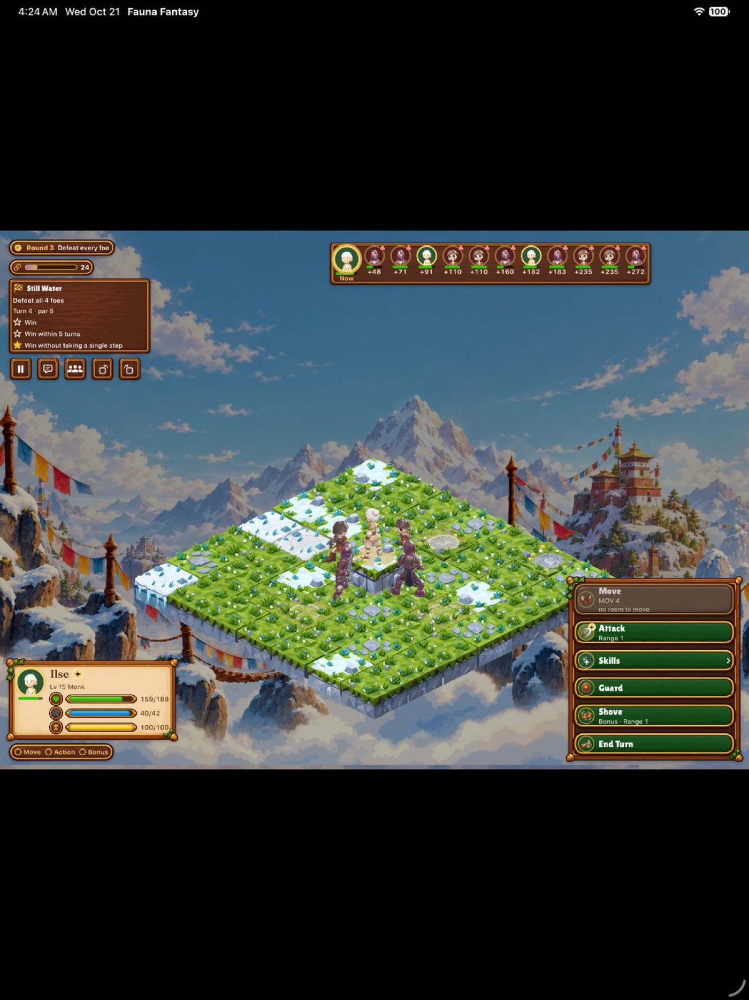
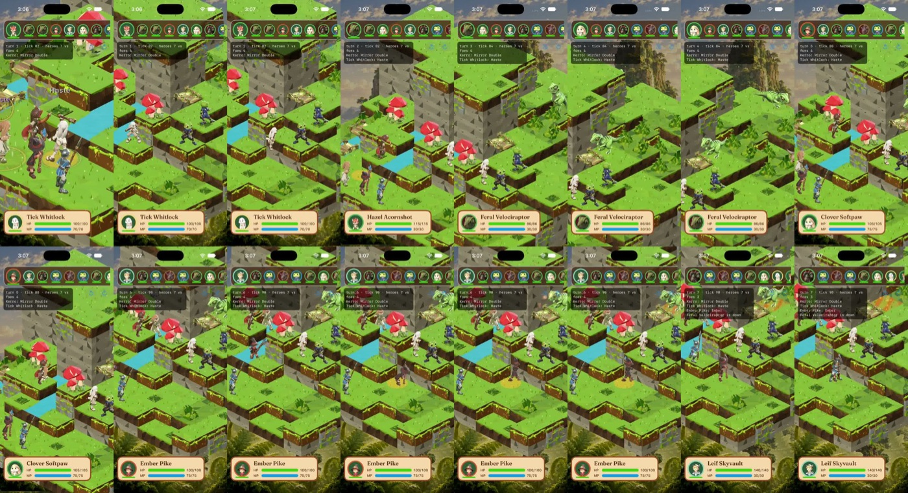
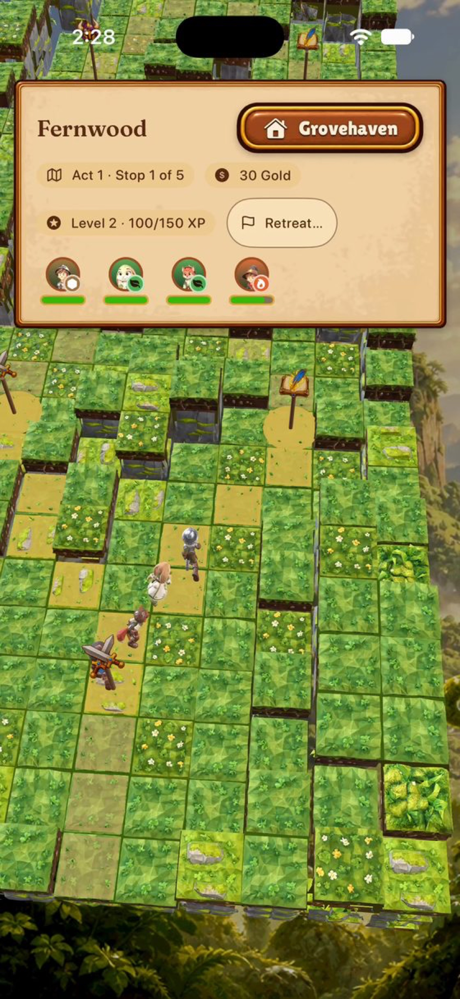
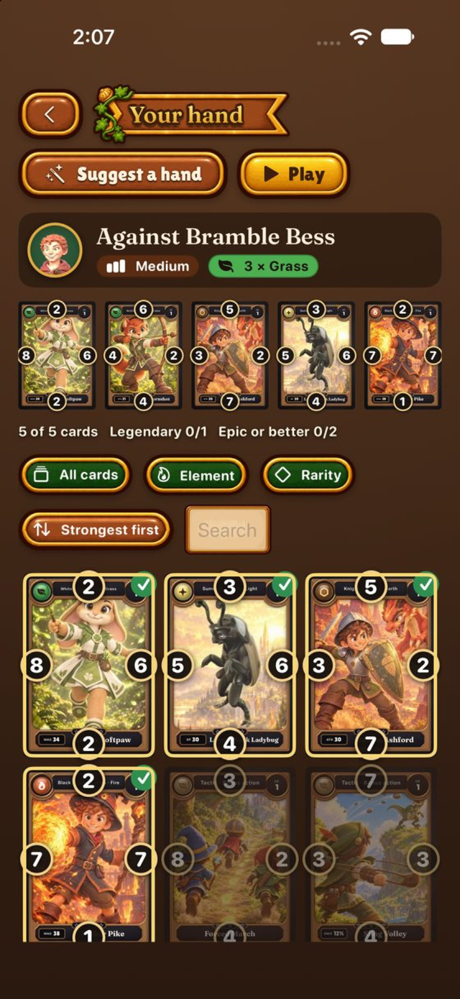
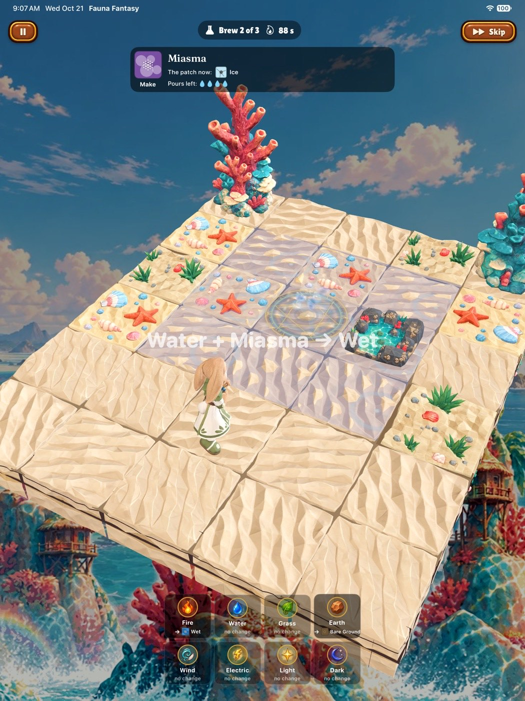
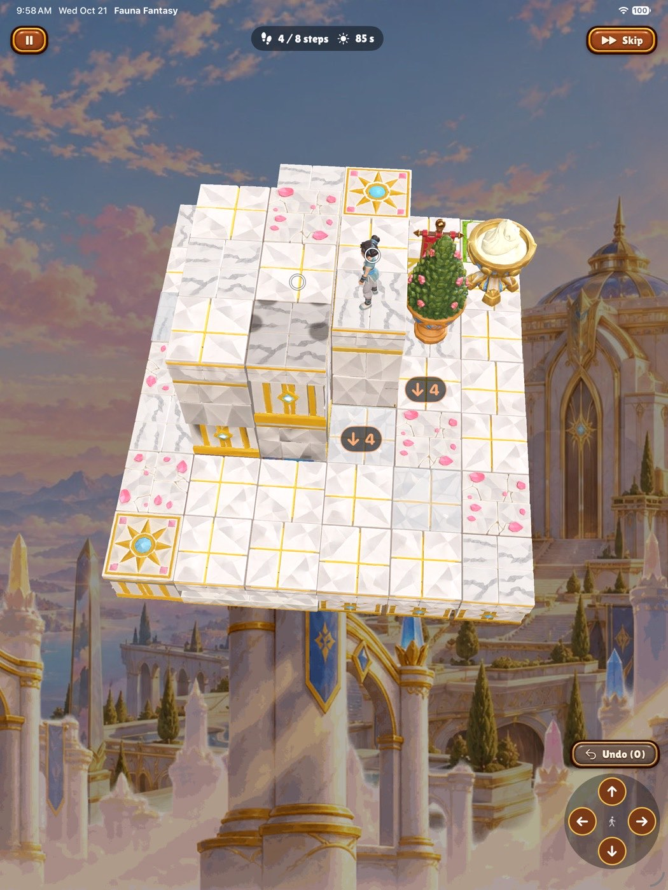
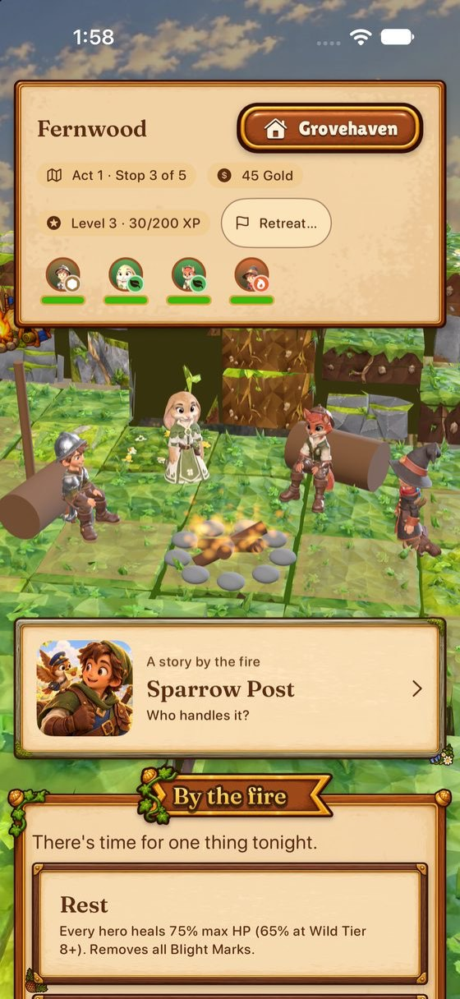
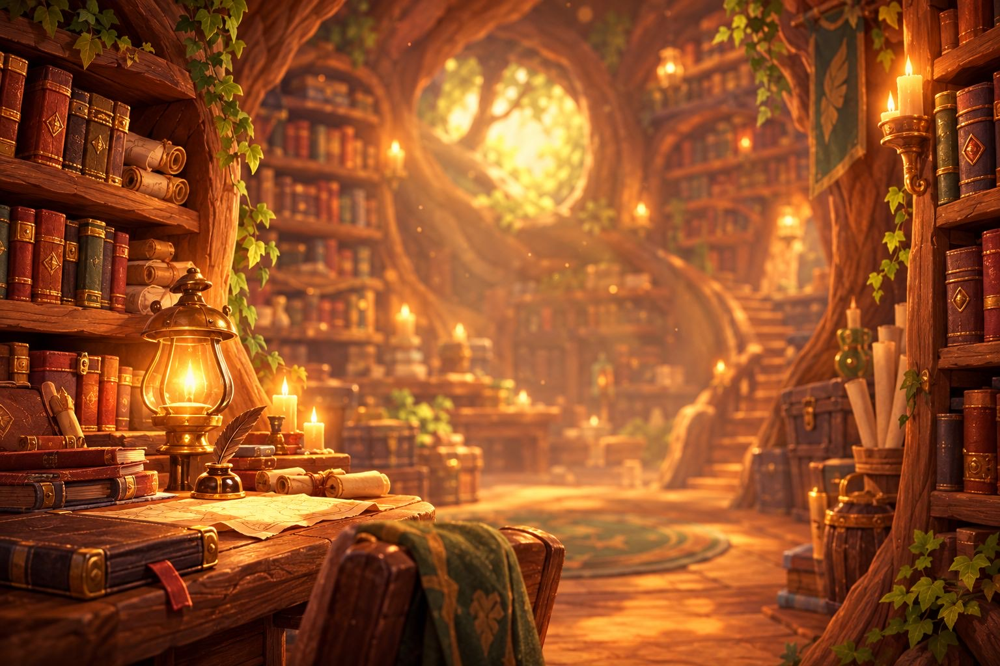
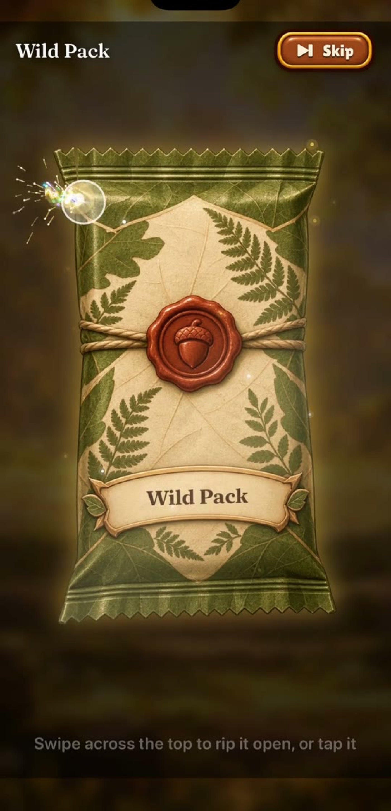
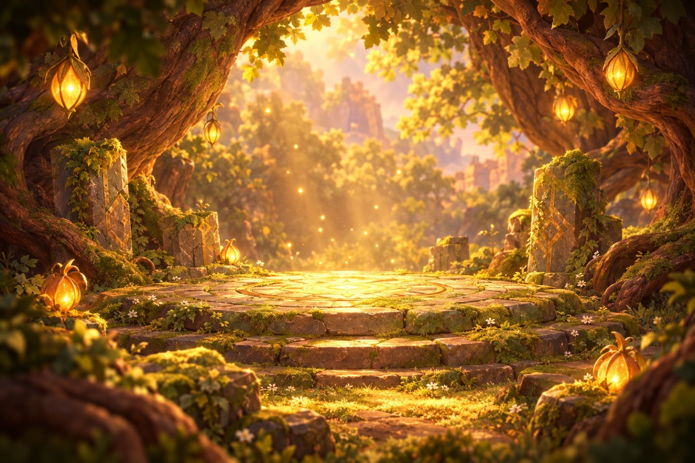

The loop
Open a pack. Pick four.
Step through the Rootgate.
A run is three biomes of five stops, two visible forks per map, a camp fire, a boss — roughly an hour if you dawdle and forty minutes if you don't. It ends at a boss throne or at your own decision to retreat. A failed run still pays out and teaches something, and the story keeps: every victory lets something rest.
Battle
Read the board, not the fine print
Battles are turn-based on a diamond-tiled board, in three-quarter view, with a timeline that shows who acts when. Your tools are the ones tactics games were built on — and then some:
Height & facing
High ground earns its keep. Attack from the flank and the game says so, in numbers, before you commit.
Living surfaces
Puddles conduct, oil burns, mist muffles. A lightning bolt into a flooded quarry is a decision, and the "Electrify the flooded quarry" on your objectives bar is an invitation.
Twelve schools, eight elements
Twenty job lines from Knight to Time Mage. Elements answer the land: a Fire hero fizzles in the Caldera, where the mountain shrugs off fire.
The Bond gauge
Fight together and the elements answer louder — until your party can call down a Wyrm for one decisive turn.
Everything is previewed
Hit %, damage range, statuses, reactions, order. If something surprises you, that's considered a bug in the design — the test we apply is "could a player have predicted this?"
Nothing dies
The Blight is defeated by being calmed. Fallen heroes are carried home on a swirl of leaves. The tone is a family animated feature: peril, yes; gore, never.


The run
The Trail: a walk with forks
Each act is five stops drawn as a 3D diorama of the land — your party's models actually walk it. At every fork you see the two routes: Battle then Elite, or Encounter then Boss; Camp sits between. There is no fog, no secret path, no coin flip pretending to be strategy.
Camp is the party round a fire: Rest, Train or Reinforce, Pemberton's cart for one-tap shopping, and a Camp story — "who handles this?" The answer can be a hero's job, species or element, and it plays out in a short written scene with the party's banter.
Encounters are Wild Duels: the tavern's 3×3 card duel, played against a hand-builder from your own collection, with your real cards — a break between battles, not a second full game.


Camp & Trail diversions
Five mini-games, no filler
Every mini-game is built on rules that already exist in battle — nothing is a guessing game, and each one has measured win-rates so a "typical player" clears about two in three. The five rotate in the Trail's Encounter pool.




Cards
A binder of small treasures
100 heroes, plus weapons, charms, crests, relics and dragon summons — every card face painted for this project, Legendary and Foil cards rendered holographic with real shader rainbows. Open packs with a swipe across the wax: the tear, the burst, the card-reveal escalations up to a Legendary that dims the room.
Duplicates aren't dead stock: spare commons feed the Fusion Forge as shards, and favourites can be raised to ★5 Prismatic over months. The collection grows every session whether you win or lose — a failed run still brings cards home.
And the design rule that governs all of it: "Does this make a card more desirable to own or improve, without letting real money buy a specific card?" No buy-to-win shortcuts by design.


Between runs
Grovehaven is a place, not a menu
Hero Trials
Every hero has a signature trial — a small hand-drawn board where the job's kit is the solution. 110 in all, each proven winnable by machine, starred on win / turn-par / job-bonus. One Daily Trial a day, playable on a borrowed hero, with a leaderboard.
Errands
A use for the bench: heroes not in your party go out in teams of 1–3 on timed errands to unlocked biomes. Read the tale when they back.
The Tavern
Eight regulars, a hand builder, and the Wild Duel table. Start a Quick Match from the back room when you're ready for people.
Five platforms, one build
iPhone (incl. iPhone Duo), iPad, Mac, Apple TV and Vision Pro — controller support, a TV mode, Apple Pencil-friendly targeting, and battles that float in your room on Vision Pro. Reduced Motion, readable fonts and high contrast are game settings, not afterthoughts.